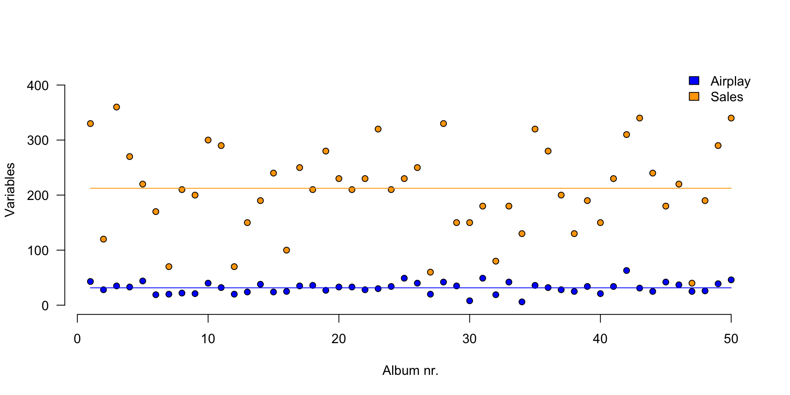
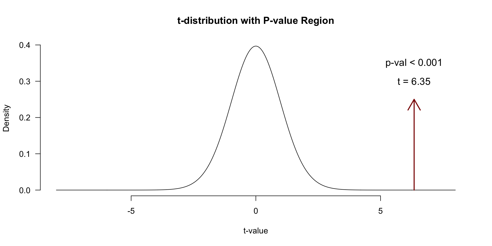
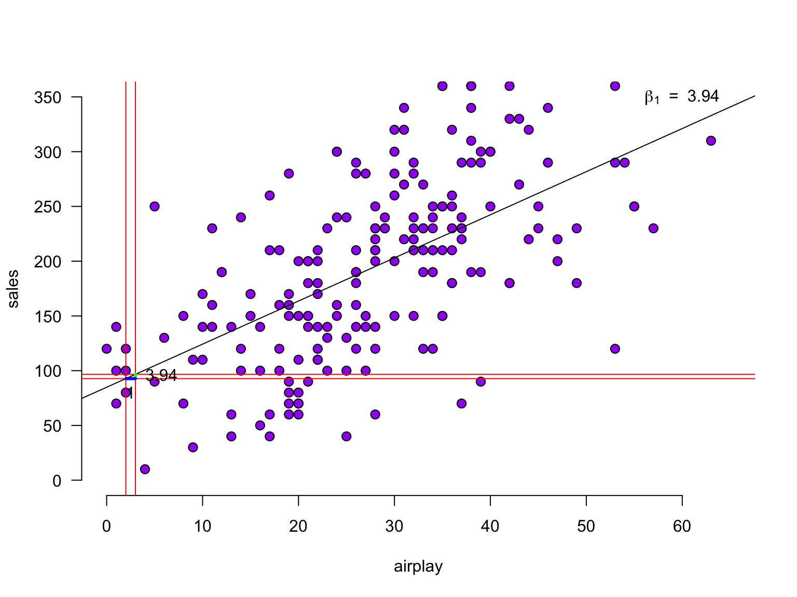

n <- 50
data <- read.csv("Album Sales.csv")[, -4]
data <- data[1:n, ] # take the first 50 rows of the album sales data set from Field
DT::datatable(data, rownames = FALSE, options = list(searching = FALSE, scrollY = 415, paging = F, info = F))20. Correlation and Simple regression
Sharon Kinkenberg & Johnny van Doorn
University of Amsterdam
2023-11-02
Some Opening Mantra’s
Always plot your data
## Always plot your data 
Predicting the DV
- The dependent variable (DV) varies
- We try to recreate/predict the observed DV values by looking at predictor variables
- Accurate approximation/prediction of the DV? -> high explained variance
- Total variability of DV = explained variance + unexplained variance
- \(\text{DV} = \text{model prediction} + \text{error}\)
- More explained variance than unexplained variance (e.g., \(F >> 1\)) -> success!
Keep your models simple/interpretable
Correlation
Pearson Correlation

In statistics, the Pearson correlation coefficient, also referred to as the Pearson’s r, Pearson product-moment correlation coefficient (PPMCC) or bivariate correlation, is a measure of the linear correlation between two variables X and Y. It has a value between +1 and −1, where 1 is total positive linear correlation, 0 is no linear correlation, and −1 is total negative linear correlation. It is widely used in the sciences. It was developed by Karl Pearson from a related idea introduced by Francis Galton in the 1880s.
Source: Wikipedia
PMCC
\[r_{xy} = \frac{{COV}_{xy}}{S_xS_y}\] Where \(S\) is the standard deviation and \(COV\) is the covariance.
\[{COV}_{xy} = \frac{\sum_{i=1}^N (x_i - \bar{x})(y_i - \bar{y})}{N-1}\]
Plot correlation

Plot correlation

Plot correlation

\[(x_i - \bar{x})(y_i - \bar{y})\]
Guess the correlation

Load data
Explaining variance
Standardize
\[z = \frac{x_i - \bar{x}}{{sd}_x}\]
Standardize
Standardize
Standardize
Covariance
\[{COV}_{xy} = \frac{\sum_{i=1}^N (x_i - \bar{x})(y_i - \bar{y})}{N-1}\]
Covariance
Correlation
\[r_{xy} = \frac{{COV}_{xy}}{S_xS_y}\]
Correlation
\[r_{xy} = \frac{{COV}_{xy}}{S_xS_y}\] \[{COV}_{xy} = \frac{\sum_{i=1}^N (x_i - \bar{x})(y_i - \bar{y})}{N-1}\]
[1] 0.5580504[1] 0.5580504Plot correlation
Significance of a correlation
\[t_r = \frac{r \sqrt{N-2}}{\sqrt{1 - r^2}} \\ {df} = N - 2\]
\[ \begin{aligned} H_0 &: t_r = 0 \\ H_A &: t_r \neq 0 \\ H_A &: t_r > 0 \\ H_A &: t_r < 0 \\ \end{aligned} \]
r to t
Visualize
One-sample t-test
Visualize
Partial correlation
Venn diagram

Partial correlation
\[\LARGE{r_{xy \cdot z} = \frac{r_{xy} - r_{xz} r_{yz}}{\sqrt{(1 - r_{xz}^2)(1 - r_{yz}^2)}}}\]
adverts <- data$adverts
cor.sales.airplay <- cor(sales,airplay)
cor.sales.adverts <- cor(sales,adverts)
cor.airplay.adverts <- cor(airplay,adverts)
data.frame(cor.sales.airplay, cor.sales.adverts, cor.airplay.adverts) cor.sales.airplay cor.sales.adverts cor.airplay.adverts
1 0.5580504 0.504637 -0.05460507Significance of partial correlation
One-sample t-test
Significance of partial correlation

Regression
(one predictor)
Regression
\[\LARGE{\text{outcome} = \text{model prediction} + \text{error}}\]
In statistics, linear regression is a linear approach for modeling the relationship between a scalar dependent variable y and one or more explanatory variables denoted X. The case of one explanatory variable is called simple linear regression.
\[\LARGE{Y_i = \beta_0 + \beta_1 X_i + \epsilon_i}\]
In linear regression, the relationships are modeled using linear predictor functions whose unknown model parameters are estimated from the data.
Source: wikipedia
Assumptions
A selection from Field:
- Sensitivity
- Homoscedasticity
Sensitivity
Outliers
- Extreme residuals
- Cook’s distance (< 1)
- Check Q-Q and residuals plots
Sensitivity

Homoscedasticity
- Variance of residual should be equal across all expected values
- Look at scatterplot of standardized: predicted values \(\times\) residuals. Roughly round shape is needed
- After the analysis is complete because it’s based on the residuals

The data
The data

Calculate regression parameters
\[{sales}_i = b_0 + b_1 {airplay}_i + \epsilon_i\]
Calculate \(b_1\)
\[b_1 = r_{xy} \frac{s_y}{s_x}\]
Calculate \(b_0\)
\[b_0 = \bar{y} - b_1 \bar{x}\]
The slope
The slope
The slope - zoomed in
Define regression equationxf
\[\widehat{sales} = {\text{model prediction}} = b_0 + b_1 {airplay}\]
So now we can add the expected sales based on this model
Predicted values
Let’s have a look
\(y\) vs \(\hat{y}\)
And lets have a look at this relation between model prediction and observed

Error
The error / residual is the difference between the model predictions and observed values
Model fit
- The fit of the model can be viewed in terms of the correlation (\(r\)) between the predictions and the observed values: if the predictions are perfect, the correlation will be 1.
- For simple regression, this is equal to the correlation between airplay and sales. For multiple regression (next lecture), these will differ.
Explained variance
Squaring this correlation gives the proportion of explained variance:
Explained variance visually (\(n = 10\))

\(r^2\) is the proportion of blue to orange, while \(1 - r^2\) is the proportion of red to orange
Test model fit
Compare model to mean Y (sales) as model
\[F = \frac{(n-p-1) r^2}{p (1-r^2)}\]
Where \({df}_{model} = n - p - 1 = N - K - 1\).
Signal to noise
Given the description of explained variance, F can again be seen as a proportion of explained to unexplained variance. Also known as a signal to noise ratio.
Calculate t-values for b’s for hypothesis testing
We can also convert each \(b\) to a \(t\)-statistic, since that has a known sampling distribution:
\[\begin{aligned} t_{n-p-1} &= \frac{b - \mu_b}{{SE}_b} \\ df &= n - p - 1 \\ \end{aligned}\]
Where \(b\) is the beta coefficient, \({SE}\) is the standard error of the beta coefficient, \(n\) is the number of subjects and \(p\) the number of predictors. \(\mu_b\) is the null-hypothesized value for \(b\) - usually set to 0.
[1] 0.3743129P-values of \(b_1\)
Visualize
Instead of obtaining the p-value by locating the t in the t-distribution, we can locate the F in the F-distribution
It’s all the same thing…
So how many @!&#$ ways do we have for assessing an association?!
[1] 0.5989188[1] 593.0151# regression coefficient in linear regression, standardized (not bounded)
# generalizes easily to settings with multiple predictors
b1 [1] 3.939182[1] 10.52377# The metrics below are more indicative of an overall model's performance
# the correlation between y and model prediction, standardized (between -1, 1)
cor(sales, prediction) # can be squared to get proportion explained variance[1] 0.5989188[1] 110.7496End
Contact


Scientific & Statistical Reasoning